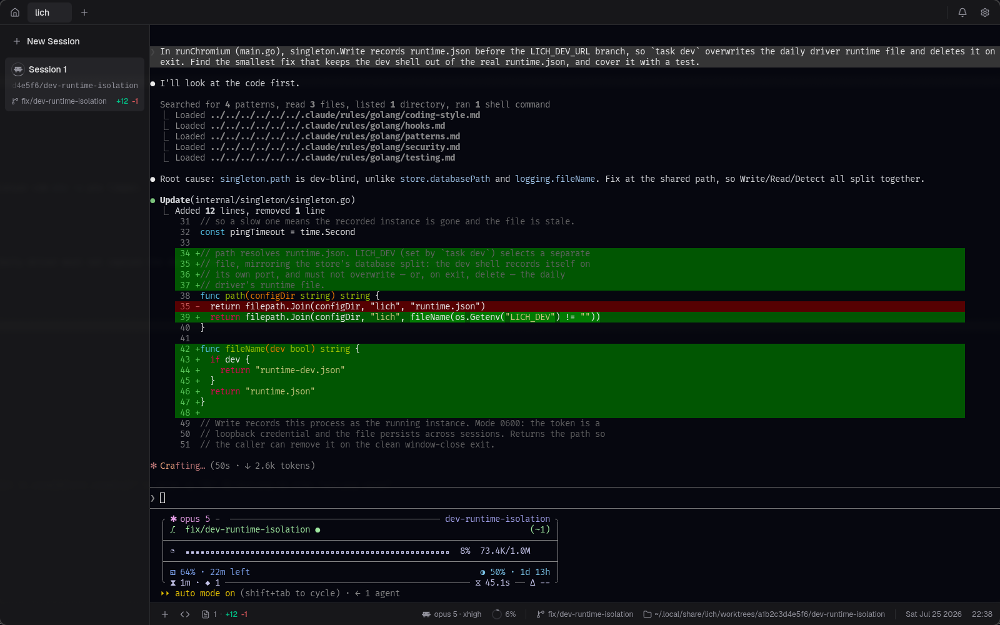
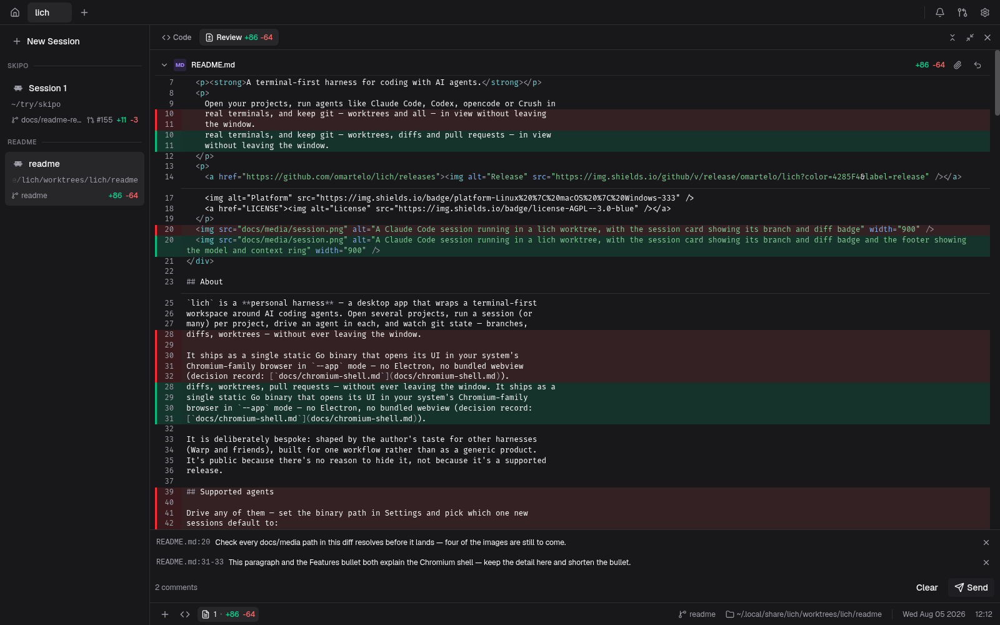
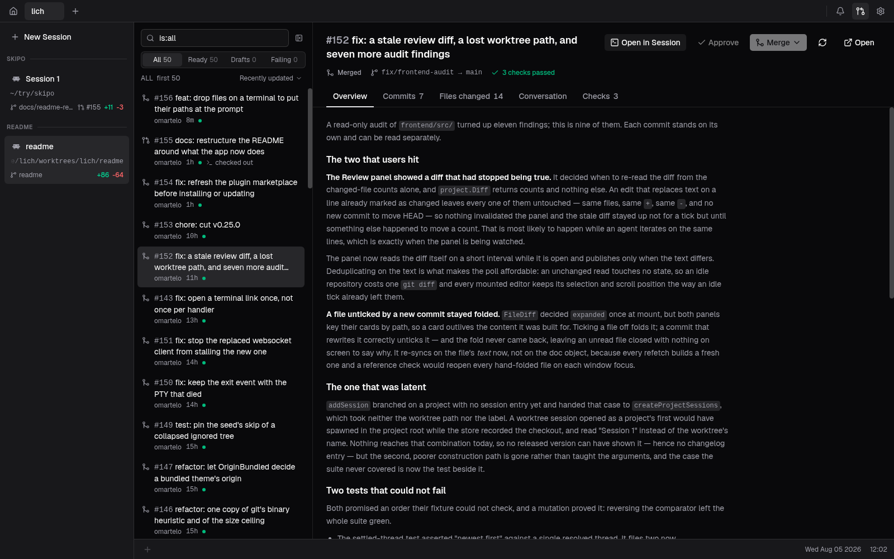
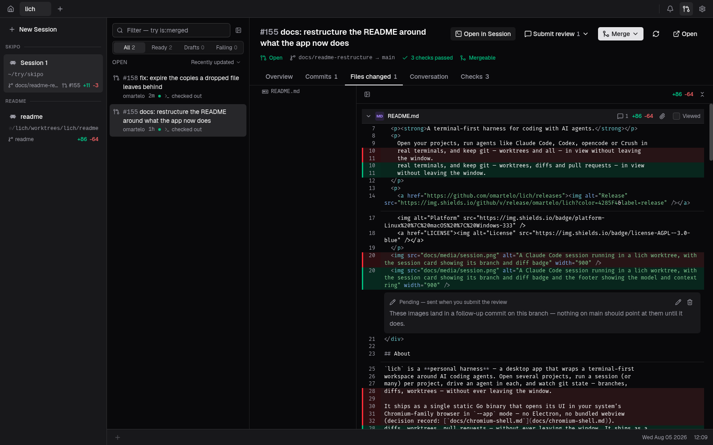
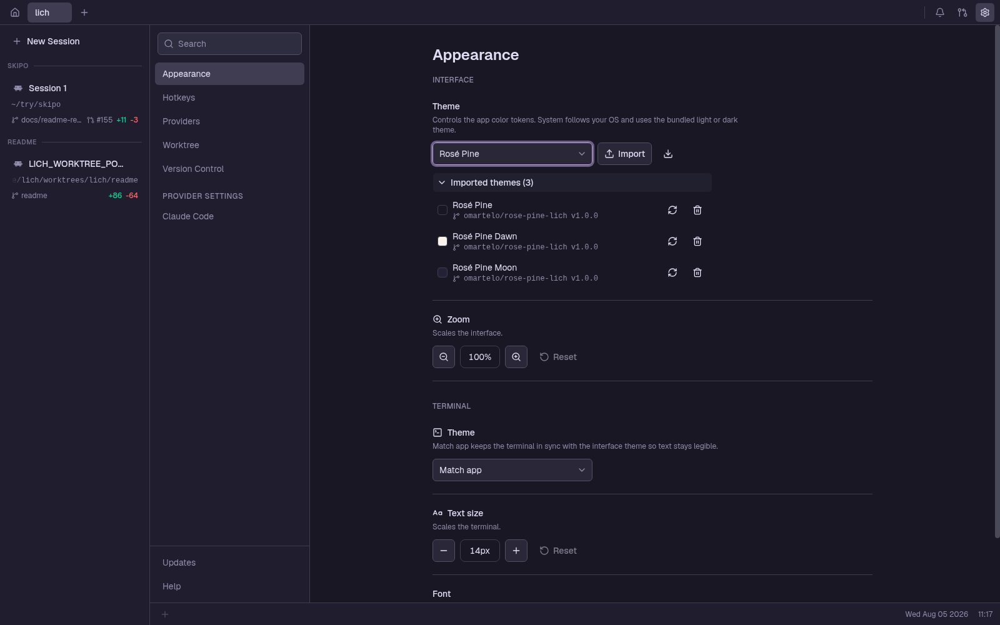

面向 AI 编码智能体的终端优先工作台
打开你的项目，在真实终端里运行 Claude Code、Codex、opencode 这样的智能体， 并把 git —— worktree、diff 和 Pull Request —— 一并留在视野里，无需离开窗口。
Linux 一行命令 —— 识别发行版、校验校验和，并安装原生软件包。

它能做什么
单个静态 Go 二进制文件，界面在你系统自带的 Chromium 系浏览器中以 --app 模式打开。
没有 Electron，也不捆绑 webview。
自带智能体
Claude Code、Codex、opencode 等都是一等公民 —— 在设置里把 lich 指向各自的 二进制文件，选一个默认的，或者逐个会话单独指定。
终端优先的会话
真正由 PTY 支撑的 shell，在 GPU 上渲染。滚动缓冲区能挺过整页刷新；底栏跟随
cd、标明模型，并用一个圆环显示已占用的上下文窗口。
内建 git worktree
从任意基础分支开一个，自动播种被 gitignore 掉的 .env* 文件，并分配
一个稳定的开发服务器端口。被保留的 worktree，其会话之后可以接着原来的对话恢复。
项目与会话
项目在顶部标签栏，会话在侧栏里按 worktree 分组 —— 每张卡片都带着自己的工作目录、 分支、diff 徽标和 Pull Request 编号。
审查，并把审查交回去
diff 面板紧挨着实时文件树。右键选中的几行就能针对它们写评论；整批评论作为一条 prompt 落进会话，但不自动发送。
Pull Request，端到端
用 GitHub 自己的限定符筛选列表，把某个 PR 检出到它自己的 worktree，内联审查、 批准并合并 —— 全程不用打开浏览器标签页。
四处看看




安装
手动的分发版软件包和静态二进制文件见 INSTALL.md。
| 平台 | 安装方式 | 运行时依赖 |
|---|---|---|
| Linux | 上面的一行命令，或 AUR 的 lich-bin |
PATH 上有 chromium / google-chrome / brave，外加 zenity |
| macOS 实验性 | brew install omartelo/tap/lich |
/Applications 里有 Chrome / Chromium / Edge / Brave |
| Windows 实验性 | 从 Releases 下载安装程序 | Chrome / Edge / Brave |
一切都跑在你自己的机器上
没有账号，不用登录，没有遥测。后端是一个带 token 鉴权的本地回环监听器，除了更新检查
—— 向 GitHub Releases 发一次版本查询 —— 之外，没有任何东西离开 localhost。
你的工作区存在配置目录下的 SQLite 里。